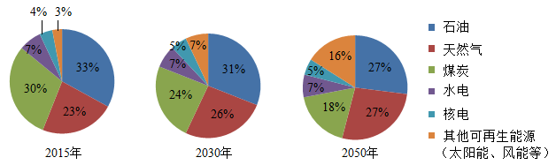
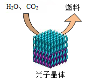

2018年北京市中考化学真题 · 科普阅读 第16题
16. 阅读下面科普短文。
化石能源是目前应用最广泛的能源，但其储量有限，不可再生。《2050年世界与中国能源展望》中提出，全球能源结构正在向多元、清洁、低碳转型。

由上图可见，太阳能、风能等其他可再生能源在能源结构中所占比例日益增多。太阳能的利用是热门研究方向之一。例如，通过光催化可将H2O、CO2转化为H2、CO、CH4、CH3OH（甲醇）等太阳能燃料，示意图右图。

随着科技的进步，能源将得到更充分的利用。例如，利用照明灯、人体散发的热量灯生活中随处可见的废热发电。我国研发的“柔性、可裁剪碲化铋（Bi2Te3）/纤维素复合热点薄膜电池”，能充分贴合人体体表，实现利用体表散热为蓝牙耳机、手表、智能手环等可穿戴电子设备供电。
在新能源的开发和利用中，化学起着不可替代的作用。
依据文章内容回答下列问题。
（1）比较2015、2030和2050年能源结构中的化石能源，所占比例降低的是_____________。
（2）H2O、CO2转化得到的太阳能燃料中，属于氧化物的是_____________；该过程属于_______________（填“物理”或“化学”）变化。
（3）复合热点薄膜电池中Bi2Te3由_______种元素组成。
（4）下列说法正确的是 ____________（填序号）。
A.能源结构向多元、清洁、低碳转型 B.科技进步会促进能源的利用
C.石油和太阳能属于可再生能源 D.生活中的废热可转化为电能
（生产实际分析）